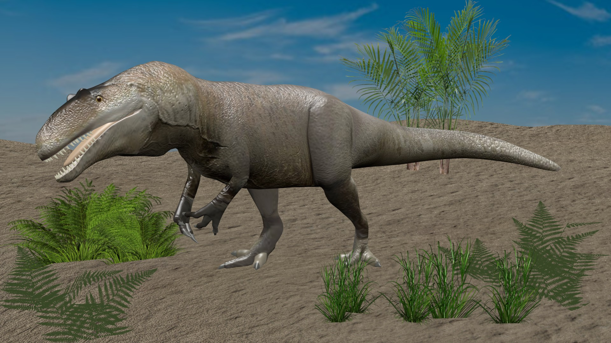
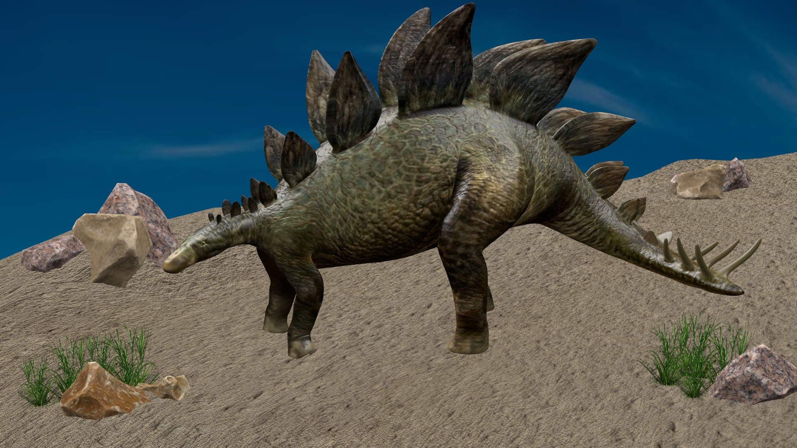
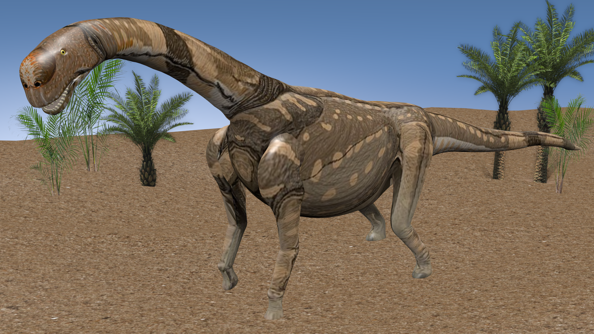
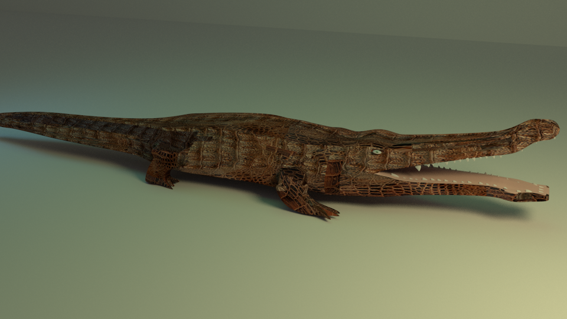
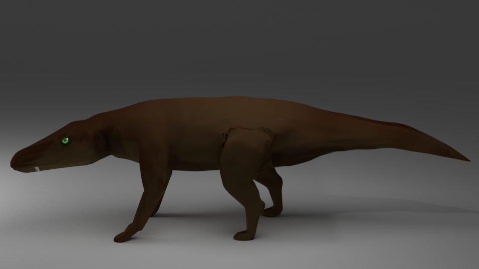
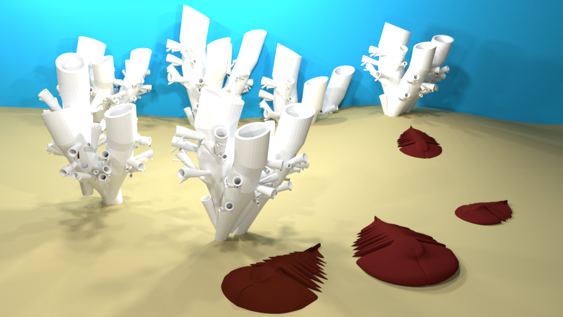
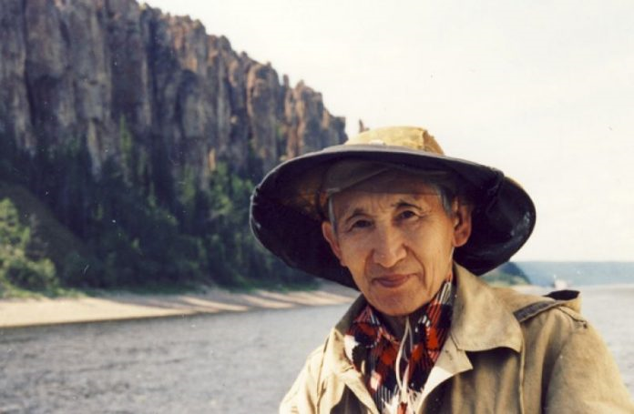
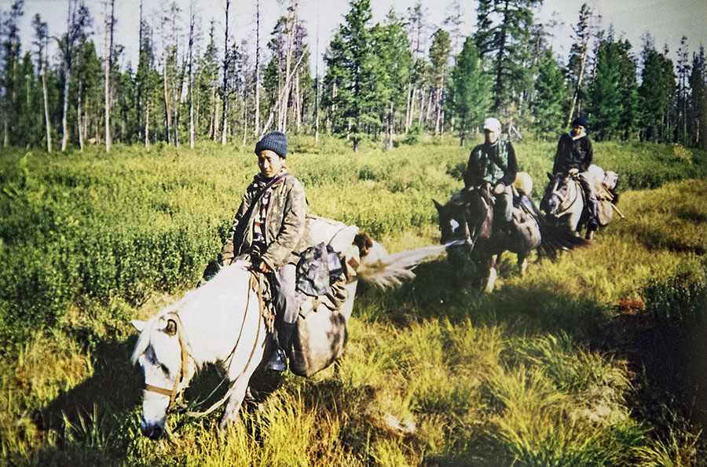

Динозавры Якутии
    
Другие ископаемые Якутии
О чём же сайт?
В информационном портале "Dinosaurs of Yakutia" вы можете узнать о древней фауне Якутии. Не смотря на то, что наша республика зарекомендовала себя основным регионом нахождения окаменелостей мамонтов, на якутской земле в Мезозойскую эру обитали динозавры и соседствовавшие с ними организмы.На этом сайте вы можете узнать историю изучения доисторической фауны Якутии и посмотреть фотографии найденных окаменелостей. На данный момент сайт находится в дальнейшей разработке. В дальнейшем планируется расширить контент сайта: разработать мини викторины и игровое ознакомление с наукой для привлечения младшего поколения, для подростков и взрослых расширить разнообразие статей и их содержание.
Изучение динозавров в Якутии
Первые сообщения о присутствии динозавров в Якутии были сделаны геологом Герцем в 1904 году. В 1960 году геолог Вадим Филатов обнаружил местонахождение динозавров раннего мелового периода (145-125 миллионов лет назад) на ручье Тээтэ, притоке Вилюй, в Сунтарском районе. Только в 1988 году ученые из Палеонтологического института (Москва) и Института геологии (Якутск) обнаружили окаменелые зубы древних животных. В Сунтарском районе были обнаружены три семейства динозавров. С 2002 года ученые Института геологии алмазов и драгоценных металлов и Палеонтологического института (Москва) приступили к изучению Тээтэ. Единственным специалистом по динозаврам в Якутии на сегодняшний день является главный научный сотрудник лаборатории стратиграфии и палеонтологии Института геологии алмазов и драгоценных металлов Сибирского отделения Российской академии наук, почетный член Палеонтологического Совета Российской академии наук, доктор геологоминералогических наук Петр Николаевич Колосов.
Пётр Николаевич Колосов
Экспедиции со школьниками Хоринского наслега
С 2002 года Петр Николаевич проводит экспедиции вместе со школьниками Сунтарского района. Место нахождения динозавров находится в 71 км от деревни Хоро. Дорога проходит через 100 км тайги.
По дороге в Тээтэ
Сенсационная находка: в Якутии был найден фрагмент позвонка плезиозавра.
Летом 2019 года Летняя экспедиционная школа «Эллэйаада» Ойской средней школы Хангаласского улуса совместно с Малой академией наук РС(Я) провела ряд поисковых работ. Одна находка юных палеонтологов признана уникальным экспонатом учеными Санкт-Петербургского государственного университета. Это позвонок плезиозавра! Находка была сделана в районе Табагинского мыса. Экспедицию возглавил заместитель директора по научной работе Ойской средней школы им. А.В. Дмитриева, краевед-энтузиаст Прокопий Ноговицын.

Место обнаружения сенсационной находки
Развивающие игры и викторины
Разработчик, владелец сайта:
Слепцова Ирина г.Якутск
irina.animation@gmail.com